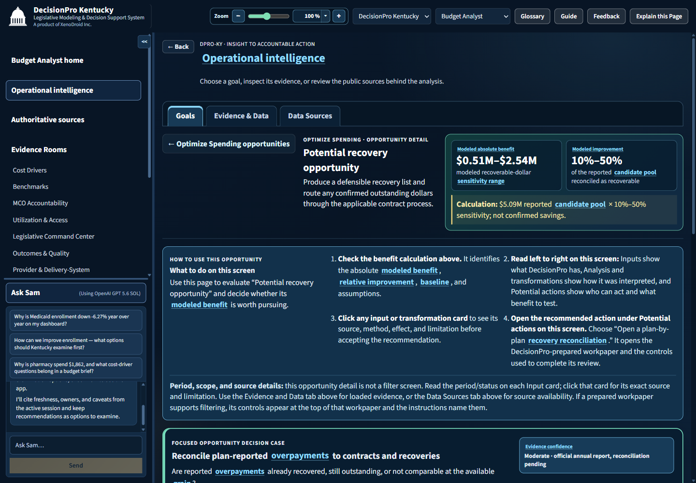

Multi-state public program intelligence
One decision platform.
Every state sees clearly.
Acts accountably.
DecisionPro connects authoritative public evidence to transparent analysis, quantified opportunities, accountable work and measured outcomes—without replacing human judgment or the owning source.
- Aggregate and de-identified
- Provenance visible
- Actions remain reviewable

Designed once. Governed by state.
A central platform with state-specific truth.
DecisionPro shares interaction, accountability and reporting capabilities while each state retains its own sources, definitions, periods, limitations and operational context.
KY
DecisionPro Kentucky
Legislative intelligence that moves from evidence to examination.
Role-aware homes, public-source Evidence Rooms, operational spending and access opportunities, recovery workpapers, consideration packs and legislative analysis.
- 9 governed Evidence Rooms
- 6 operational goal portfolios
- Prepared recovery-reconciliation workflow

FL
DecisionPro Florida
Florida public dashboards—connected to accountable action.
All eleven AHCA dashboard domains stay reachable while permitted public data gains normalized analysis, integrated reporting, quantified opportunities and measured-value controls.
- 8 Florida Evidence Rooms
- 6 operational goal portfolios
- Source-native parity plus DPro analysis

Beyond dashboard parity
Public dashboards make evidence visible.
DecisionPro makes it operational.
DecisionPro preserves authoritative publisher interactions and adds the connected decision layer. It does not claim ownership of publisher data or bypass restricted exports.
Authoritative visibility
- Publisher-native filters and detail
- Public program and provider reporting
- Dashboard-specific downloads and context
- Evidence remains with its owning source
+
Full-spectrum decision operations
- Cross-source analytical Evidence Rooms
- Quantified opportunities with confidence boundaries
- Inputs → transformations → accountable actions
- Workpapers, briefs, legislative framing and realized value

The DecisionPro advantage
Not another wall of charts.
A system for responsible follow-through.
Operational intelligence
Every goal starts with a plain-language benefit and narrows into quantified opportunities, evidence, transformations and potential actions.
Accountable work
Prepared workpapers turn “someone should investigate” into a review scope with an owner, status, timing, evidence needs and guardrails.
Decision reporting
Integrated reports, consideration packs, executive briefs and legislative analysis keep evidence and limitations attached to the decision.
Measured outcomes
Modeled benefit stays separate from reviewer-entered realized value so planning estimates never masquerade as confirmed savings.
See the real product
One experience from source to action.
Current isolated-rendered captures from the DecisionPro demonstration.

Credible by design
Strong decisions need visible boundaries.
DecisionPro keeps observed facts, modeled opportunities, recommendations and realized outcomes distinct. Public-source provenance, freshness, definitions and known limitations remain attached throughout the workflow.
- No PHI or person-level Medicaid records
- Publisher ownership and restrictions honored
- Explicit REAL, modeled and Gap status
- Options to examine—not automated prescriptions
Decision intelligence for every state
Bring public evidence and accountable action into one operating model.
Start with Kentucky and Florida. Extend the same governed product architecture to the next state without turning DecisionPro into a disconnected collection of dashboards.
DecisionPro is a product of XenoDroid Inc. · Public aggregate evidence only · No PHI